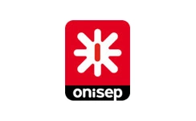

Bienvenue sur le page d'accueil de mon Portfolio
“Plus j'en apprends, plus je suis fascinée par les possibilités qu'offre ce métier.”
Qui suis je ?
Je suis en reconversion professionnelle et actuellement étudiante en deuxième année en BTS Services Informatiques aux Organisations (SIO) option Solutions Logicielles et Applications Métiers (SLAM) à IRIS MediaSchool Nice.
Qu'ai-je fait jusqu'à présent ?
J'ai suivi mes études en Hôtellerie et Restauration en Hongrie, où j'ai obtenu deux licences en sciences. Ces diplômes sont reconnus par l'État français au niveau BAC +3.
À mon arrivée en France, j'ai débuté ma carrière en tant que commis de cuisine, avant d'évoluer vers des postes de Chef de Partie Pâtissier/Froid dans divers restaurants. Fort de ces expériences, j'ai ensuite été nommé Chef de cuisine au Restaurant Key West, où j'ai eu l'opportunité de gérer une équipe de 5 à 6 personnes.
Pourquoi suis-je ici ?
Je suis parvenue à un point où j'ai ressenti le besoin de me réorienter vers un métier qui m'intéresse profondément et me passionne. Une personne que je connais depuis plus de dix ans m'a alors suggéré : "Je t'imagine bien en tant que développeuse informatique." À ce moment-là, je n'avais jamais envisagé une reconversion dans ce domaine.
Cependant, en explorant ce domaine, en lisant des fiches de poste, en écoutant des professionnels du développement et en effectuant un stage chez Thales Alenia Space où j'ai découvert le langage Python, j'ai eu une révélation: "C'est exactement ce que je veux faire!"
J'ai opté pour cette formation afin de maximiser mes chances d'être opérationnelle dès l'obtention de mon Bac+2, tout en ayant l'intention de poursuivre mes études jusqu'au niveau Bac+5.
Qu'est ce que le BTS SIO ?
Le Brevet de Technicien Supérieur en Services Informatiques aux Organisations (BTS SIO) s'adresse à ceux qui souhaitent se former en deux ans aux métiers d'administrateur réseau ou de développeur. Ce diplôme permet ensuite d'intégrer directement le marché du travail ou de poursuivre des études dans le domaine de l'informatique.
Il y a le choix de deux options:
L'option SISR (Solutions d'infrastructure, systèmes et réseaux) qui est destinée aux étudiants qui s'orientent vers les métiers liés à la conception et la maintenance d'infrastructures réseaux.
L'option SLAM (Solutions Logicielles et Applications Métier) qui est destinée aux étudiants qui s'orientent vers les métiers liés à la conception et la maintenance de programmes applicatifs.
Qu'est ce que le BTS SIO SLAM ?

En option SLAM du BTS SIO, on a des cours de conception et développement d'applications de maintenance et de gestion de système informatique, de cybersécurité des services informatiques, de développement web et objet ainsi que de l'analyse data. On apprend aussi la maintenance corrective ou évolutive d'une solution applicative, la création d'applications et d'interfaces pour les professionnels.